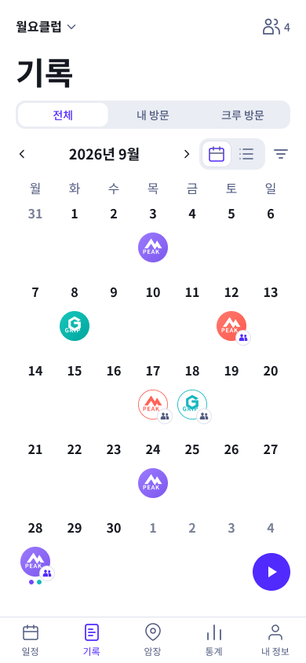
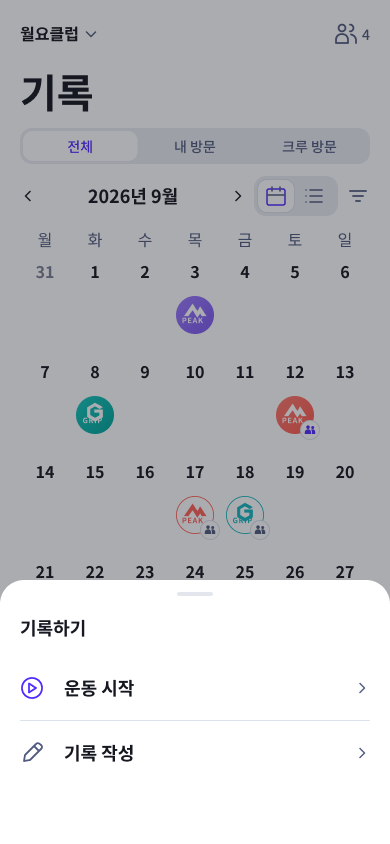

A안 · 원형 버튼 + 선택창
기존1·2번을 하나의 흐름으로 묶었습니다. 달력·목록 오른쪽 아래 원형 버튼을 누르면 선택창을 엽니다. 하단 기록 메뉴를 다시 누르는 방식은 이 A안에 포함하지 않습니다.
원형 ▶ 버튼 → 운동 시작 / 기록 작성 선택
버튼이 있는 기본 화면

제목·필터 영역은 유지하고 오른쪽 아래에 버튼을 둡니다.
버튼을 누른 뒤

운동 시작 → 암장 선택 → 운동 시작. 기록 작성은 기존 작성 흐름으로 이동하는 안입니다.
선택 단계가 하나 더 있습니다.6주 달력·많은 도장과 버튼이 겹치지 않는지는 추가 확인이 필요합니다.